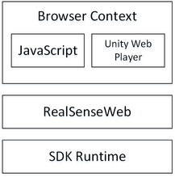

SDK Components
The SDK library architecture, as illustrated in Figure 5, consists of several layers of components. The essence of the SDK functionalities lays in the input/output (I/O) modules and the algorithm modules. The I/O modules retrieve input from an input device or send output to an output device. The algorithm modules include various pattern detection and recognition algorithms that are critical ingredients of innovative human computer experience, such as face recognition, gesture recognition, speech recognition, and text to speech.
Figure 5: SDK Architecture Simplified
The SDK standardizes the interfaces of the I/O and the algorithm modules so that the applications can access the functionalities without being concerned with the underlying implementations. Multiple implementations of SDK interfaces may coexist. The SDK provides the mechanism to search for a specific implementation from available algorithm modules as well as other critical features such as creating an instance of the algorithm implementation.
Figure 6: SDK Language and Framework Wrappers
Language and Framework Wrappers
To extend the reach of different developers, the SDK provides wrappers for a few popular languages, frameworks and game engines such as C#, Unity*, Processing*, and Java*. The application links to the native C++ interfaces or different wrappers that support similar interfaces for the programming environment, as illustrated in Figure 7. The interfaces are mostly matched with slightly different naming prefixes.
This manual uses [M] (where M stands for "managed") in the interface names to represent interfaces that are available in a managed environment (such as C# and Java). For example, PXC[M]Capture represents the C++ interface PXCCapture and the C# or Java interface PXCMCapture.
The manual uses additional markings after the interface or method names as follows:
Marking |
Example |
Comment |
None |
Common for all languages and frameworks, except JavaScript. JavaScript interfaces or methods are listed separately. |
|
(C++) |
C++ specific interface or methods. |
|
(C#) |
C# and Unity C# specific interface or methods. |
|
(C#.NET4) |
C# .NET4 specific interface or methods. Not available in Unity C#. |
|
(Unity) |
Unity C# specific interface or methods. Not available in C#. |
|
(Java) |
Java and Processing specific interface or methods. |
|
(Processing) |
PXCMImage.ImageData.ToPImage |
Processing specific interface or methods. Not available in Java. |
(JavaScript) |
JavaScript interface or methods. |
The SDK provides multiple layers of interfaces to enable Unity applications. The SDK Unity C# scripts support enables both the PC standalone and web player platforms for advanced developers, who write most C# scripts for their game applications. The SDK Unity Toolkit provides a higher level abstraction for developers that would like to introduce perceptual computing interactions to their applications with minimum code writing. The SDK Unity C# scripts (same as the C# interface) are described in this manual while the SDK Unity Toolkit is detailed in the SDK Unity Toolkit reference manual.

Figure 7: SDK Unity Support
Unity Web Player and Browser Support
The SDK provides limited support of browser applications such as a JavaScript* program in an HTML5 web page, or a Unity web player application running in a browser. As illustrated in Figure 8, in each of these cases, the SDK function calls are routed through the web socket protocol to a local RealSenseWeb engine for execution on the SDK runtimes. Due to web socket bandwidth/latency limitations, only a small subset of SDK features are supported. See the Browser Support section for more details.

Figure 8: SDK Browser Support